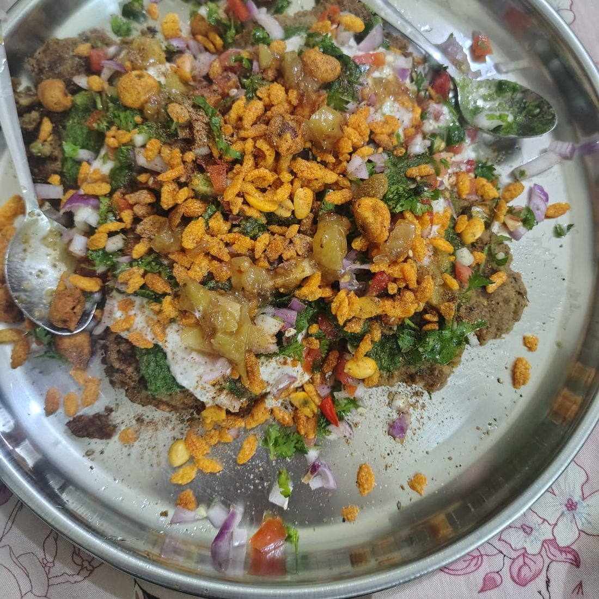
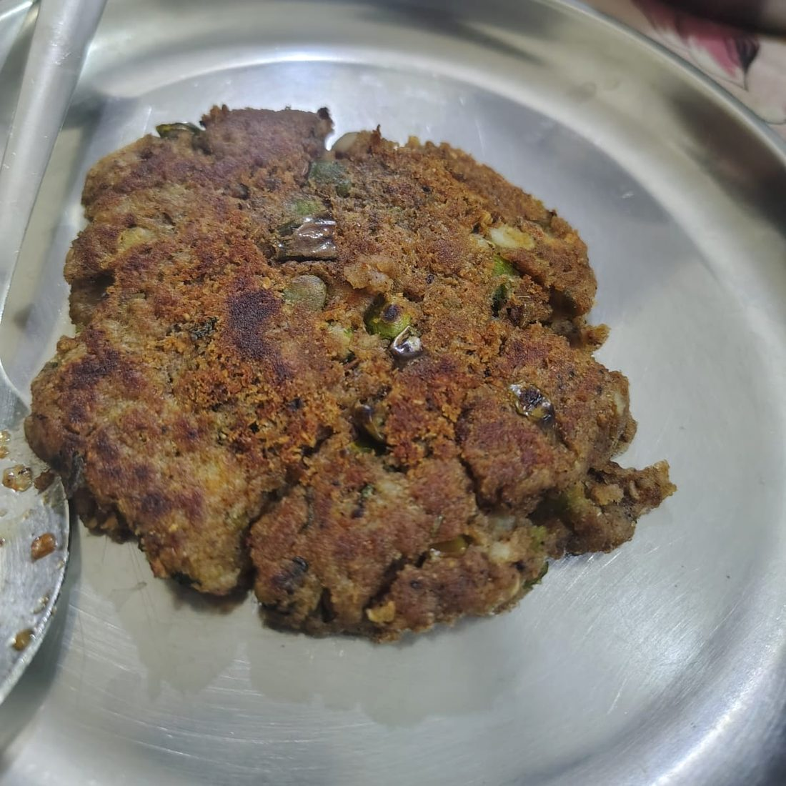

Everyday / North India
Aalu-Matar Tikki Chaat
Spicechaat masala
Written20 November 2026
FromHer handwriting
Tagspotato · peas · tikki · chaat · dahi · chutney · snack · vegetarian


Handwritten on five notebook pages, kept in originals/ and not published. The text below is her own edited version of the transcription, checked by her on 2026-11-20; it differs from the pages in a few amounts, in the sweet chutney and in the namkeen line. One spelling corrected with her permission (immediately).
Aalu-Matar Tikki Chaat
Special Masala
- Dry roast 1 tbsp jeera, 1 tbsp black pepper and 1/2 tbsp saunf seeds
- Cool down and grind into a fine powder
Potato
- Peel and boil 4 medium sized potatoes till tender.
- Drain and let it cool
- Mash thoroughly
- Add a pinch of salt, 1/4th tsp black salt, 1/2 tsp red chilli powder, 1/2 tsp sunrise garam masala powder, 1/2 tsp chaat masala, 1/2 tsp amchoor powder, 1 tsp special masala powder
- Mix well.
- Add 1 tbsp rice flour and 1 tbsp fine breadcrumbs
- Keep aside for later.
Peas
- Heat 1 tbsp refined oil in a pan
- Add 1/4th tsp heeng, 1/2 tsp ajwain, 1/2 tsp jeera seeds.
- Add 3-4 chopped green chillies, 1/4th knob ginger (grated) and 5-6 cloves garlic (grated), fry for ~1 min.
- Add 7-8 tbsp peeled green peas, 1/4th tsp black salt, pinch of salt, 1/2 tsp red chilli powder, 1/2 tsp jeera powder 1/4th tsp chaat masala, 1/2 tsp amchur powder.
- Mix well with the peas
- Splash 1/4th glass water on the peas and cover.
- Cook covered at medium (600 induction) for 7-10 min with stirring in between till the peas are soft.
- Mash the peas with the back of a spoon and mix well.
- Add 2-3 tbsp sattu, mix well and turn off heat immediately and let it cool.
TIKKI
- Take potato mixture from earlier and mix it with the cooled Peas mixture.
- If it is not binding properly add some more breadcrumbs/rice flour
- Heat a flat tawa and add 3-4 tbsp refined oil at medium (600 induction)
- Make lemon sized spherical balls using tikki mixture and very slightly flatten it and put it on tawa.
Note - The tikki should NOT be fully flat at this stage.
- After making all the semi-spherical tikkis and putting on tawa, let it fry undisturbed for 5-7 min.
- Flip all the semi-spherical tikkis gently and fry for 5-7 min
- Increase heat to medium high (900 induction) and flatten all the tikkis gently.
- Let one side get crispy, then flip gently to fry the other side till it's crisp.
- Take it out of the tawa and keep on a steel plate to cool.
Dahi
- Take ~150g dahi in a bowl
- Add a pinch of salt, 1/4th tsp black salt, 1.5 tsp Special masala powder, 1/2 tsp black pepper powder and 2 tbsp sugar.
- whisk well till smooth and keep in refrigerator till assembly
Green Chutney
- In a grinder jar add one fistful of chopped coriander leaves, 3-4 green chillies, 1/4th inch knob of ginger, 2-3 cloves of garlic, 1 tbsp lemon juice, pinch of salt, pinch of black salt and 1/4th tsp chaat masala powder
- Add a splash of water and grind into a smooth chutney
Bhaja Moshla
- Dry roast & grind 1 tbsp dhania seeds, 1 small bay leaf, 2 dried red chillies, 1 tbsp saunf seeds, 1/2 tbsp jeera seeds, 1 green elaichi
Sweet Chutney ( Raw Mango)
- Peel and chop one small raw mango into small cubes
- Heat up 1 tbsp refined oil in a pan
- Add 1/2 tsp saunf seeds, 1 dried red chilli and 1/4th tsp heeng
- Add the raw mango and a pinch of salt
- Add 1/2 knob of ginger (grated), 1 tbsp bhaja moshla
- Add half a glass of water and cook at medium heat (600 induction) till the mangoes are soft (Mash some of the mango pieces)
- Add 6-7 tbsp sugar and let it dissolve.
- Take the chutney off of heat when it is semi-thick.
Salad
- 1 small tomato (chopped into small cubes)
- 1 medium onion (finely chopped)
- 2 green chillies (finely chopped)
- A bunch of coriander leaves (finely chopped)
Namkeen / Mixture
- Use whatever is available at hand
Final Chaat Masala
- Combine 1 tbsp Special masala powder, 1 tsp red chilli powder, 1 tsp chaat masala, 1 tsp amchur powder, 1/2 tsp black salt
ASSEMBLY
Namkeen/mixture ↑ another sprinkle of Final chaat masala powder ↑ salad ↑ Dahi ↑ sweet chutney ↑ Green chutney ↑ sprinkle of Final chaat masala powder ↑ Aalu-Matar tikki